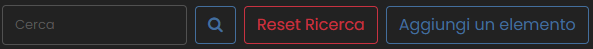
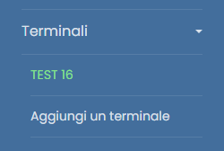

L'accesso all'applicazione può essere effettuato inserendo l'indirizzo 192.168.1.61:81 nella barra degli indirizzi di un qualsiasi browser o cliccando sul seguente collegamento: Accesso all'applicazione.
Si prega di procedere con l'autenticazione utilizzando le proprie credenziali di accesso. L'username coincide con quello del dominio.
Nel caso del primo accesso, utilizzare Password1 come password (si suggerisce inoltre di modificare la password dopo il primo accesso per motivi di sicurezza).
All'interno della schermata principale, è presente una barra laterale appositamente dedicata alla navigazione all'interno del sito. La sidebar è richiudibile per offrire anche una navigazione a schermo intero.
Le opzioni sono le seguenti:
La pagina offre un elenco completo dell'anagrafica, riportando tutti i nominativi insieme ai rispettivi codici badge. Inoltre, è possibile verificare lo stato di abilitazione all'accesso per ciascuna persona.

Si presentano ulteriori funzionalità come:
üîç La possibilt√† di ricercare una persona per nome, cognome opppure codice
➕ Aggiungere un elemento all'elenco
üóëÔ∏è Eliminare un elemento
✏️ Modificare un elemento
All'interno della barra laterale, una volta che hai espanso il menu a tendina, si potrà accedere a diverse opzioni relative alla gestione dei terminali.

➕ Aggiungi Nuovo Terminale: Questa opzione consentirà di inserire un nuovo terminale nel sistema. Può essere utilizzata per registrare nuovi dispositivi o punti di accesso.
üõ†Ô∏è Pagina di Gestione Terminale: Questa opizione offre la possibilit√† di eliminazione, modifica o di gestione degli accessi di quel terminale.
Queste opzioni mirano a offrire un controllo accurato sulla gestione dei terminali, consentendo l'aggiunta, modifica o eliminazione delle informazioni relative a ciascun terminale in modo efficace e conforme alle esigenze.
La sezione dedicata ai transiti presenta una struttura essenziale costituita da una tabella. Questa tabella espone in modo chiaro e conciso ogni singolo tentativo di accesso, fornendo dettagli fondamentali come l'orario, il numero del badge, il nome, il cognome e l'identificazione del terminale coinvolto.
È opportuno notare che gli accessi rifiutati sono distinti attraverso l'utilizzo di una rappresentazione cromatica. In particolare, gli accessi negati sono evidenziati utilizzando uil colore rosso, offrendo così una visualizzazione immediata e chiara di questa particolare condizione.
La pagina è strutturata intorno a una semplice tabella, in cui ciascuna riga rappresenta un'autorizzazione univoca. Questo approccio permette una visualizzazione chiara e organizzata delle diverse autorizzazioni presenti.
Per apportare modifiche alle autorizzazioni, è possibile revocare o aggiungere nuove autorizzazioni tramite l'utilizzo di un pulsante collocato alla base della tabella.